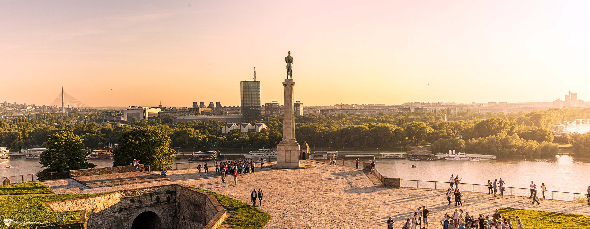
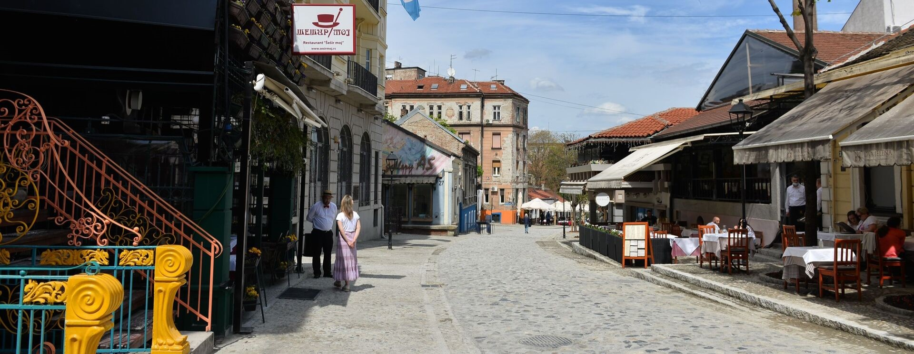
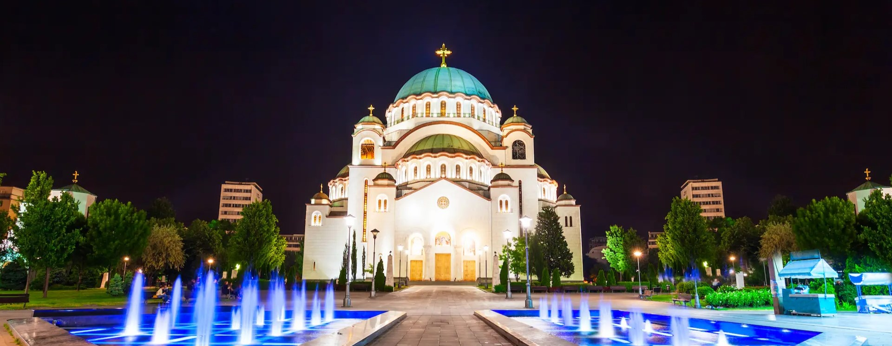
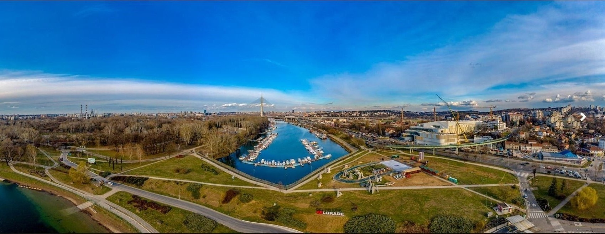
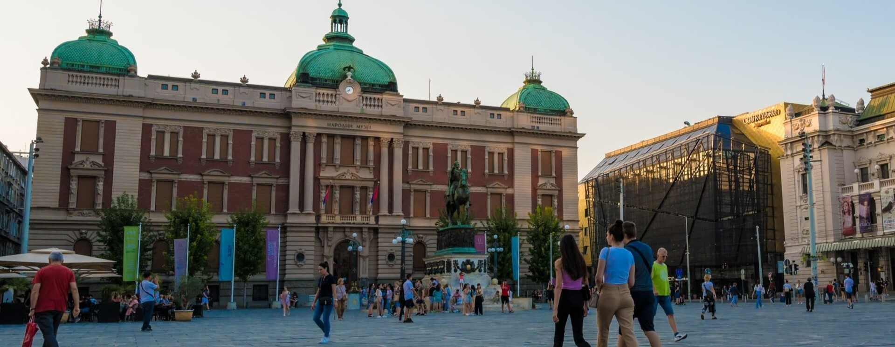
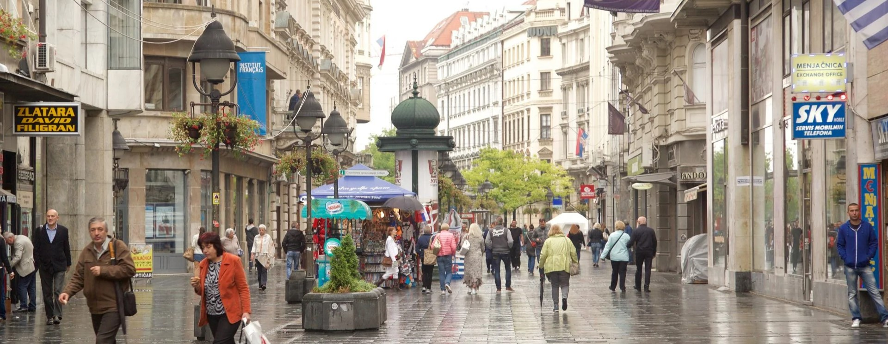

Otkrijte mesta koja čine Beograd posebnim

Najpoznatija beogradska tvrđava i istorijski spomenik, smešten na mestu gde se Sava uliva u Dunav. Osim impresivnog pogleda na reke, Kalemegdan nudi šetališta, muzeje i kulturne manifestacije. To je jedno od omiljenih mesta kako za turiste, tako i za Beograđane.

Boemska četvrt Beograda, poznata po starim kafanama, kaldrmisanim ulicama i živopisnoj atmosferi. Nekada je bila centar umetničkog i kulturnog života, a danas zadržava svoj autentičan duh. Skadarlija je nezaobilazna za sve koji žele da iskuse tradicionalnu srpsku kuhinju i muziku uživo.

Najveći pravoslavni hram na Balkanu i jedan od najvećih u svetu. Njegova monumentalna arhitektura i raskošni mozaici čine ga jednim od simbola Beograda. Hram je posvećen osnivaču Srpske pravoslavne crkve, Svetom Savi, i predstavlja duhovno središte grada.

Popularno gradsko izletište, poznato kao „beogradsko more“. Ada nudi plaže, sportske terene, biciklističke staze i brojne kafiće i restorane. Tokom leta privlači hiljade posetilaca koji žele da uživaju u prirodi i rekreaciji.

Najstarija i najznačajnija muzejska institucija u Srbiji, osnovana 1844. godine. Muzej čuva više od 400.000 eksponata, uključujući arheološka otkrića, umetnička dela i predmete iz istorije i kulture. Smešten na Trgu Republike, predstavlja nezaobilaznu destinaciju za sve ljubitelje umetnosti i istorije.

Glavna pešačka ulica Beograda, koja povezuje Trg Republike sa Kalemegdanom. Prepuna je prodavnica, kafića, galerija i značajnih građevina iz XIX veka. Šetnja ovom ulicom pruža pravi osećaj dinamike i duha grada.